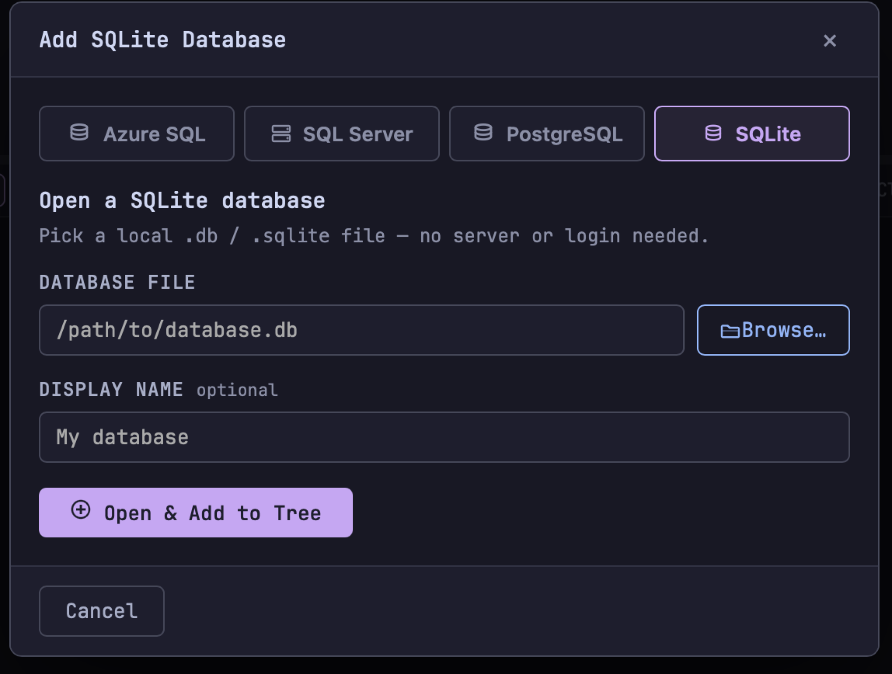
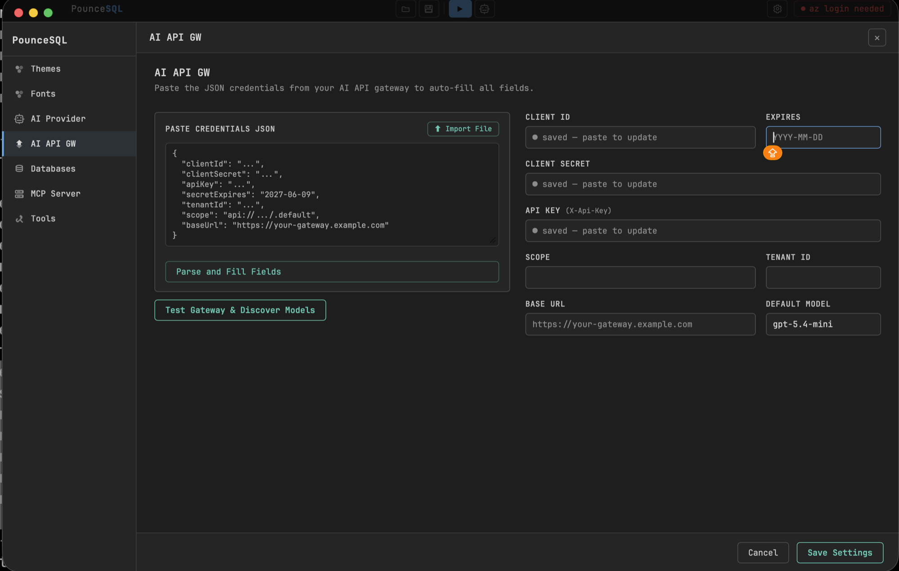
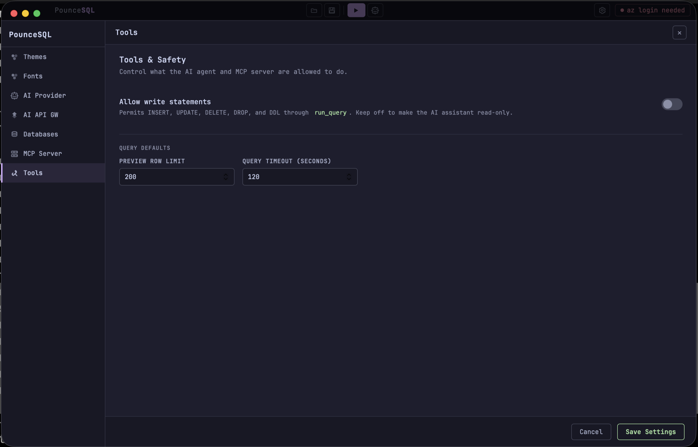
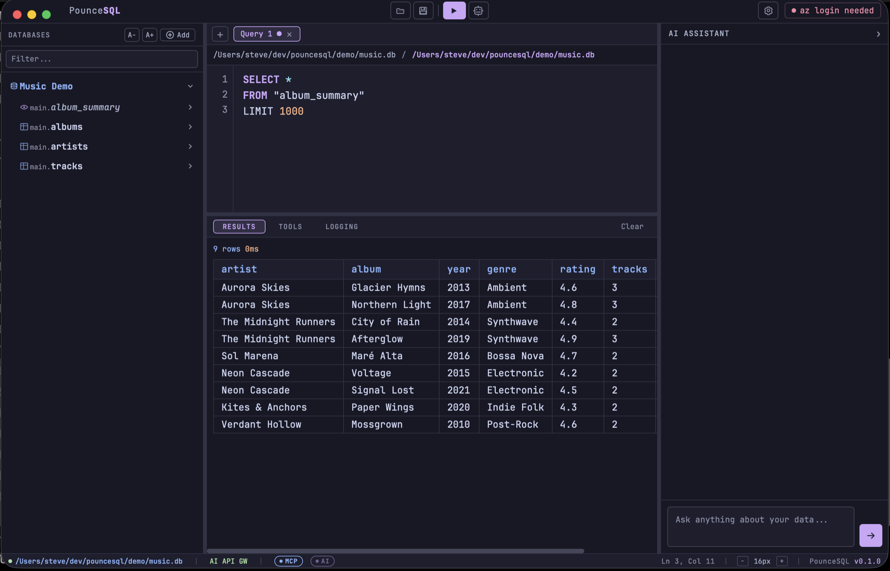
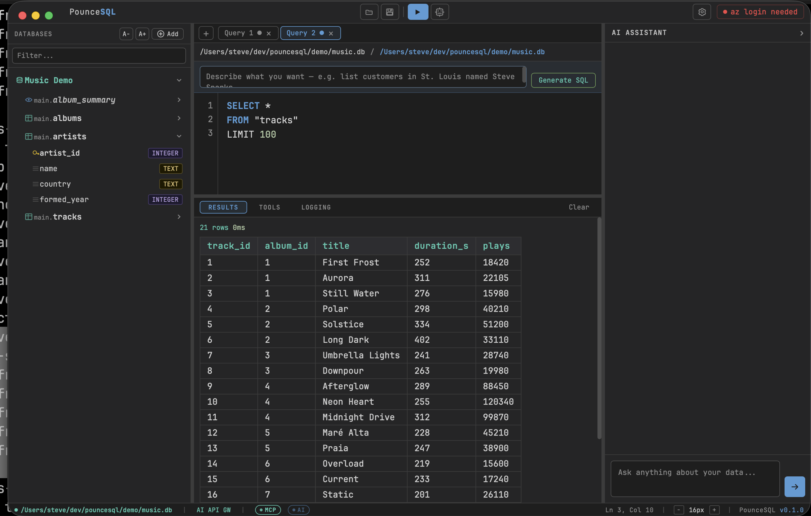
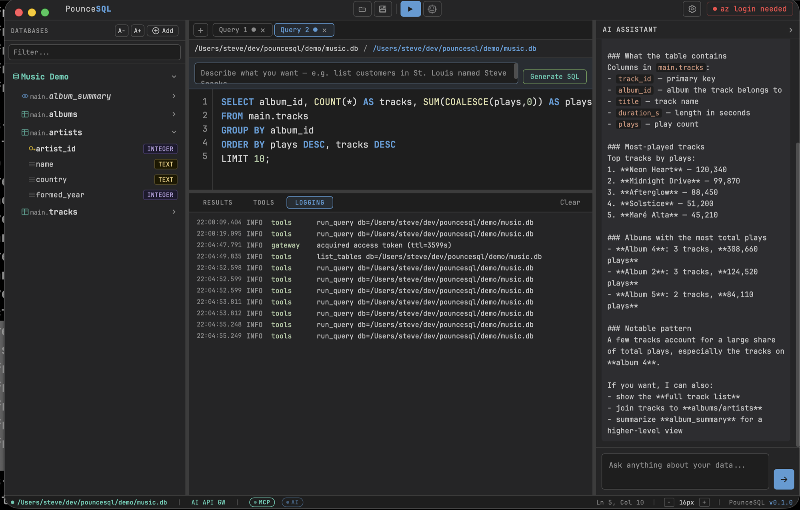
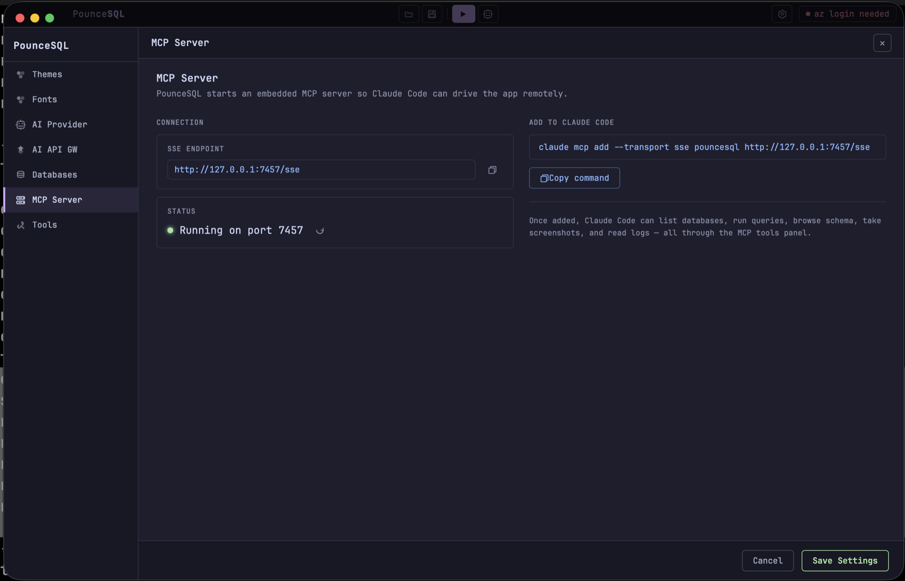
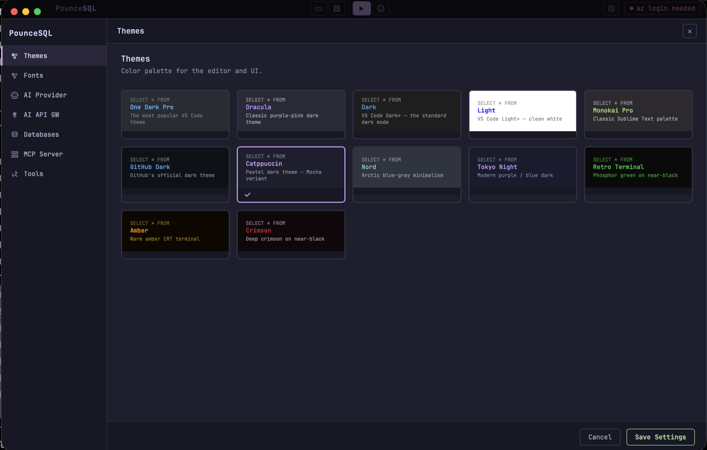

Screenshots





A fast, native macOS client for Azure SQL, SQL Server, PostgreSQL, and SQLite — with a built-in AI assistant, an embedded MCP server, and a retro terminal look you'll actually enjoy.
brew install --cask senzalldev/tap/pouncesql

Browse subscriptions, servers, and databases with your az login session — no passwords stored.
2017 – 2025+, local or domain-joined. SQL login, Windows/NTLM, or passwordless Kerberos SSO.
Connect over LAN, VPN, or Tailscale. Pin a whole server and browse every database it hosts.
Open any .db file — no server, no login. Just pick the file and start querying.
Pin a server and expand it like a tree — every database, every schema, every table and column. Filter across databases instantly. Right-click a table to preview, count, or generate a query.

The built-in AI assistant writes and explains T-SQL and Postgres for you, grounded in the schema you're connected to. Bring your own API key or route through an enterprise AI gateway.

PounceSQL runs a local Model Context Protocol server, so Claude Code and other agents can drive it — list databases, run queries, read results — and you watch it happen live in the app.

A dozen editor themes, separate fonts for the interface and the editor, and independent size control for the editor, tree, results grid, and UI. Tune it until it feels right.




Free, native, and notarized for macOS 13+ (Apple Silicon).
brew install --cask senzalldev/tap/pouncesql
Recommended — auto-updates with brew upgrade.
Requires the Azure CLI for Azure SQL (brew install azure-cli, then az login).